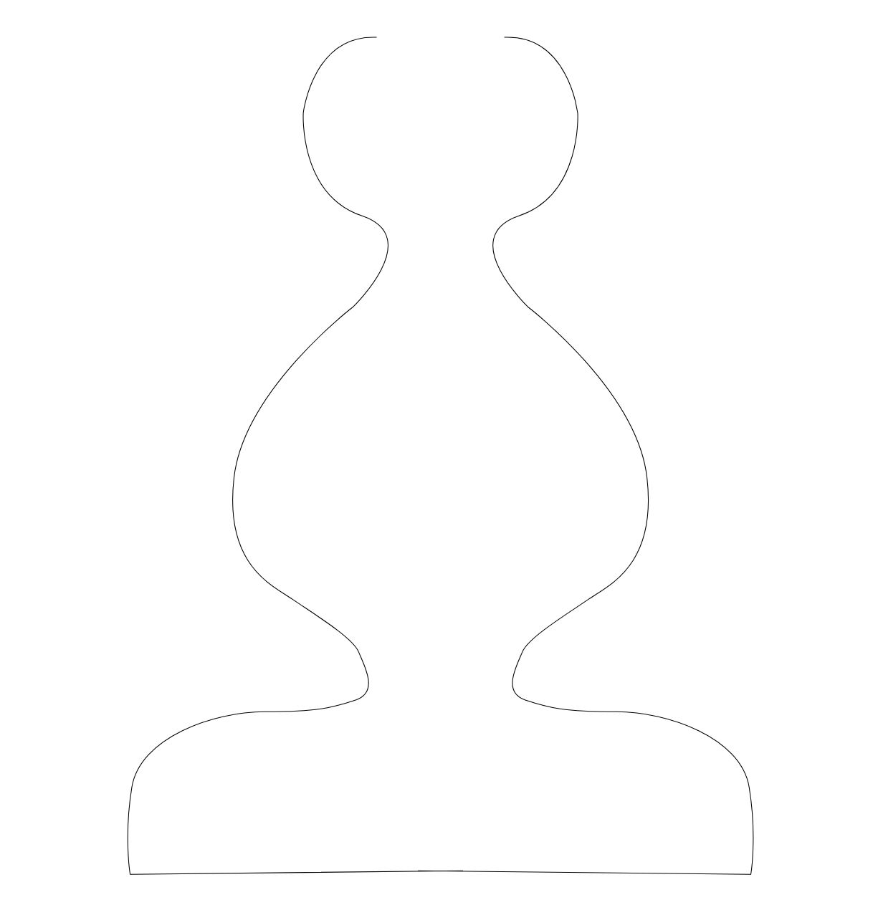
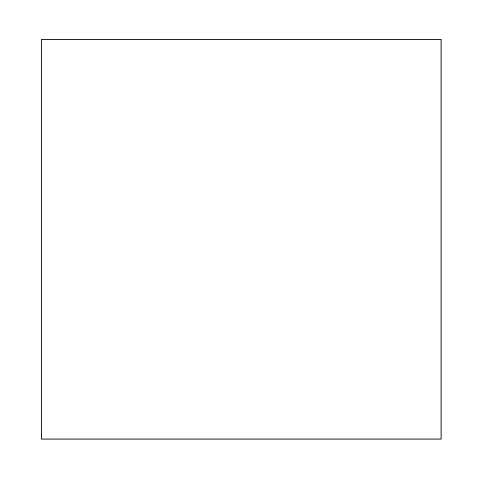
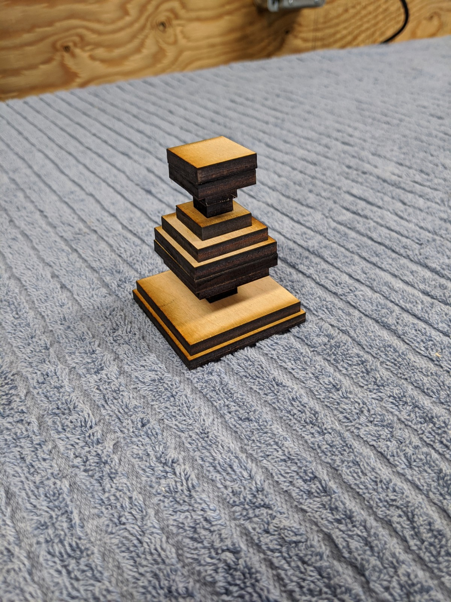

Part Transformers¶
Each Part can have one or more transformers. Transformers are different from path transforms in that the part transformers may result in more than one part.
{
"id": "my_part1",
"part_transformers": [
{
"type" : "splitter"
...
}
],
"components": [
...
]
}
Splitter¶
Splitter will break a part into 2 pieces, a top and bottom, with using two edges.
This is especially useful for parts that are too large to fit on a single material.
Each edge is passed from and to Point params to tell the edges where to render.
The bleed_top and bleed_bottom params allow the lines to bleed over
Parameters¶
y: The y position where the split should happen. Note, ifyis set, autosplitmust be false or unset.
auto_split: <true|false> If true, the splitter will activate if the part doesnot fit with the material. Splits will be in half horizontally or vertically. This will perform as many individual splits as needed to fit the material size. Note that if auto_split is on, then any value of
ywill be ignored
y_offset: this will add an extra amount to the split location (either thevalue of
yor the auto_split location.y_offsetis useful for dynamically moving the split point when multiple identical layers are stacked on top of each other so the break points are not aligned
bleed_top: The extra amount of bleed the top piece should have. This is usefulfor butt joints that extend into the top and bottom pieces. Note that if the bleed amount is not supplied, it will be calculated automatically, this is sufficient for most usecases.
bleed_bottom: The extra amount of bleed the bottom piece should have. This is usefulfor butt joints that extend into the top and bottom pieces.
plug_edge: Each connector edge is expected to have a plug side and a socket side.(though some edge types might not). The plug edge is always the bottom edge of the top piece.
socket_edge: The socket edge is always the top edge of the bottom piece.max_width: if auto split is true this will be the max width a component can have beforeit is split. If max_width is not supplied, material_width will be used
max_height: if auto split is true this will be the max height a component can have beforeit is split. If max_height is not supplied, material_height will be used
{
"type": "splitter",
"y": "2",
"plug_edge": {
"id": "plug_edge",
"type": "line"
},
"socket_edge": {
"type": "line"
}
}
Lathe¶
Examples
Lathe takes a component outline and ‘turns’ a set of stackable parts. Given a side view outline shape, and the shape of the piece, the lathe will calculate all the parts to stack to make the shape.
for instance:
{kind=link}
with repeatable:
{kind=link}
Results in:
{kind=link}
Parameters¶
repeatable: The component which is going to be repeated. This component should use thewidthvariable.material_thicknesspadding_topAmount of space before rendering the first slice.padding_bottomAmount of space from the bottom that will be the last slicelathe_variable_nameIf supplied, then the rendering of this will provide some global variables to any subsequently rendered parts. See Global Variables
Local Variables¶
lathe__indexThe index of the parts within this Lathe. The top most piece is part_index 0.lathe__widthThe width of the current piece.
Global Variables¶
<lathe_variable_name>__total_heightThe hieght of all the lathe parts stacked<lathe_variable_name>__top_widthThe width of the top piece<lathe_variable_name>__bottom_widthThe width of the bottom piece